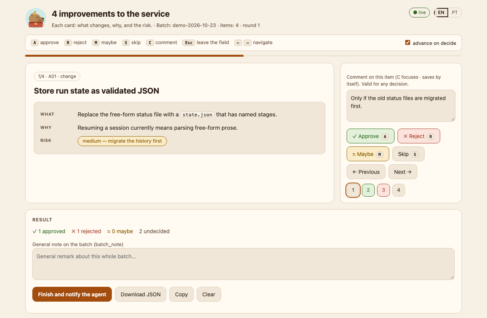

ar-board
v1.4.0The approve/reject board above, plus custom labels, a confirm step for risky cards, an offline mode for remote sessions, and question-board for answering several questions on one screen.
Read about ar-boardPlugins for Claude Code
ar-board turns your agent’s list of proposals into cards on a local page. Approve, reject, or mark “maybe” with a single key, and say why. The agent gets back an exact list of what you approved and reads your reasons before it proposes anything next time.
A sketch of the flow that runs only on this page. The real panel, shown below, runs locally on your machine and has a comment box on every card.
How a round works
Ask in plain language, for example: “Give me 10 architecture improvements as an AR board.” Your decisions travel back to the agent as a file on disk, not as a sentence it has to interpret.
The agent opens .ar-board/preferences.md first, so it knows which patterns you have already rejected.
The agent serves a panel at 127.0.0.1, with one card per proposal: what changes, why, and the risk.
A, R, or M per card, plus a comment saying why. Press the same key again to undo.
The agent reads the decisions with summary, is told by its skill to work only on the approved cards, and asks you to confirm the rules it inferred from your comments.

127.0.0.1, with a comment on the current card. It opens in English, and the EN/PT toggle in its header switches it to Portuguese.The toolbox
Each plugin installs on its own, is tested in CI, and is documented in English and Portuguese. Panels, cards, and messages are in English by default, with pt-BR on request.
The approve/reject board above, plus custom labels, a confirm step for risky cards, an offline mode for remote sessions, and question-board for answering several questions on one screen.
Read about ar-boardA read-only scan of a repository’s files and full history, before it goes public, for Claude session links, home paths, email addresses, and your internal names. Not a secret scanner: pair it with one.
Read about publish-checkStale branches, worktrees, and stashes as cards that show how sure the tool is that each is merged. Only what you approve is deleted, after a fresh check, and work that exists nowhere else is backed up first.
Read about tidy-boarddoc-truth checks that your docs cite files and links that exist, handoff writes a verified end-of-session note, and todo-sweep triages TODO and FIXME comments on a board, each with its age from git blame.
A hook-computed header line with the time and branch, which Claude copies to the top of each reply, plus an optional status line showing token usage and plan limits.
Read about header-footerInstall
> /plugin marketplace add dvwinck/capybara-toolbox > /plugin install ar-board@capybara-toolbox
Swap ar-board for any plugin above, then restart Claude Code. You need Python 3.9 or later; publish-check, tidy-board, and housekeeping also need git. For header-footer, the status line needs one more step: ask Claude to turn the footer on. Everything the tools show you is in English by default; pass --lang pt-BR or set CAPYBARA_LANG=pt-BR for Portuguese (publish-check is English only). CI covers Ubuntu and macOS; Windows is not tested yet.
Principles
Panels bind to 127.0.0.1 with a fresh token per run. No telemetry; the only network call is tidy-board asking gh about merged pull requests.
Python standard library and git. No pip and no build step; gh (for tidy-board) and Node (for header-footer) are optional.
CI runs 1,031 tests on Ubuntu and macOS with Python 3.9, 3.11, 3.13, and 3.14.
Nothing is deleted without your approval, and no tool edits your source files. Only header-footer touches your Claude settings, and only when you turn it on.